산업안전산업기사 (2011-06-12 기출문제)
1과목: 산업안전관리론
1. 다음 중 일반적인 교육의 3요소에 포함되지 않는 것은?
- 강사
- 내용
- 대상
- 평가
(정답률: 82%)

2. 안전대에 관한 용어 중 다음 설명에 해당되는 것은?
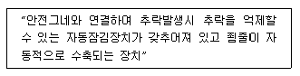
- 안전블럭
- 죔줄
- 신축조절기
- 충격흡수장치
(정답률: 55%)
3. 하인리히의 “재해발생의 연쇄성 이론”과 관련하여 부적절한 조명, 부적당한 환기 등으로 인한 재해 발생은 다음 중 어느 단계에 해당되는가?
- 사고
- 개인적 결함
- 사회적 환경 및 유전적 요소
- 불안전한 행동 및 불안전한 상태
(정답률: 79%)
4. 다음 [그림]의 착시 현상을 무엇이라 하는가?
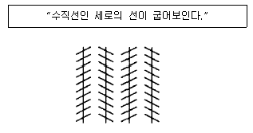
- Herling의 착시
- Köhler의 착시
- Poggendorf의 착시
- Zöller의 착시
(정답률: 57%)
5. 다음 중 위험예지훈련 기초 4라운드법의 진행에서 전원이 도의를 통하여 위험요인을 발견하는 단계로 가장 적절한 것은?
- 제1라운드 : 현상파악
- 제2라운드 : 본질추구
- 제3라운드 : 대책수립
- 제4라운드 : 목표설정
(정답률: 81%)
6. 다음 중 인간의 사회적 행동의 기본 형태가 아닌 것은?
- 대립
- 모방
- 도피
- 협력
(정답률: 56%)
7. 의식수준 5단계 중 의식수준이 가장 적극적인 상태이며 신뢰성이 가장 높은 상태로 주의집중이 가장 활성화되는 단계는?
- Phase 0
- Phase Ⅰ
- PhaseⅡ
- Phase Ⅲ
(정답률: 68%)
8. 토의식 교육방법 중 몇 사람의 전문가에 의하여 과제에 관한 경해가 발표된 뒤 참가자로 하여금 의견이나 질문을 하게 하여 토의하는 방식은 다음 중 어느 것인가?
- 패널 디스커션(pane discussion)
- 심포지엄(symposium)
- 포럼(forum)
- 버즈 세션(buzz session)
(정답률: 55%)
9. 다음 중 재해 예방의 4원칙에 해당하지 않는 것은?
- 예방가능의 원칙
- 대책선정의 원칙
- 손실우연의 원칙
- 원인추정의 원칙
(정답률: 81%)
10. 산업안전보건법상 사업주가 근로자에 대하여 실시하여야 하는 교육 중 특별안전보건교육의 대상 작업이 아닌 것은?
- 화학설비의 탱크 내 작업
- 건설용 리프트∙곤돌라를 이용한 작업
- 인화성 가스 또는 폭발성 물질 중 가스의 발생장치 취급 작업
- 전압이 30V인 정전 및 활선작업
(정답률: 87%)
11. 다음 중 산업안전보건법상 자율안전확인대상 기계∙기구 및 설비에 해당하지 않는 것은?(관련 규정 개정전 문제로 여기서는 기존 정답인 3번을 누르면 정답 처리됩니다. 자세한 내용은 해설을 참고하세요.)
- 원심기
- 공기압축기
- 롤러기
- 곤돌라
(정답률: 75%)
12. 산업안전보건법상 안전 ∙ 보건표시에 사용하는 색채 가운데 비상구 및 피난소, 사람 또는 차량의 통행표지 등에 사용하는 색채는?
- 흰색
- 노란색
- 녹색
- 파란색
(정답률: 88%)
13. A 사업장에서 100명의 작업자가 1일 10시간씩 연간 300일을 작업하는 동안 3건의 재해가 발생하였다. 이 사업장의 도수율은 얼마인가?
- 10
- 15
- 20
- 30
(정답률: 72%)
14. 재해의 원인 중 간접 원인에 속하지 않는 것은?
- 교육적 원인
- 관리적 원인
- 기술적 원인
- 물적 원인
(정답률: 86%)
15. 다음 중 조직이 리더에게 부여하는 권한으로 볼 수 없는 것은?
- 보상적 권한
- 강압적 권한
- 합법적 권한
- 위임된 권한
(정답률: 78%)
16. 다음 중 일반적으로 사업장에서 안전관리조직을 구성할 때 고려할 사항과 가장 거리가 먼 것은?
- 조직 구성원의 책임과 권한을 명확하게 한다.
- 회사의 특성과 규모에 부합되게 조직되어야 한다.
- 생산조직과는 동떨어진 독특한 조직이 되도록 하여 효율성을 높인다.
- 조직의 기능이 충분히 발휘될 수 있는 제도적 체계가 갖추어져야 한다.
(정답률: 89%)
17. 다음 중 주로 일선 관리감독자를 대상으로 하며, 작업지도기법. 작업개선기법, 인간관계 관리기법 등을 교육하는 방법은?
- ATT(American Telephone & Telegram Co.)
- MTP(Management Training Program)
- CCS(Civil Communication Section)
- TWI(Trainig Within Industry)
(정답률: 84%)
18. 매슬로우(Maslow)의 욕구 5단계 이론 중 인간이 갖고자 하는 최고의 욕구에 해당하는 것은?
- 자아실현의 욕구
- 사회적인 욕구
- 안전의 욕구
- 생리적인 욕구
(정답률: 81%)
19. 재해 분석의 방법으로는 “재해”라고 하는 최종 결과에 중대한 관계를 가지고 있는 모든 것의 연쇄관계를 분명히 하는데 있다. 다음 중 그 결과를 검토하는 “4M”에 해당하지 않는 것은?
- Man
- Machine
- Media
- Multi
(정답률: 85%)
20. 다음 중 학습을 자극(Stimulus)에 의한 반응(Response)으로 보는 이론에 해당하는 것은?
- 손다이크(Thorndike)의 시행착오설
- 퀠러(Köhler)의 통찰설
- 톨만(Tolman)의 기호형태설
- 레윈(Lewin)의 장설 이론(Fied theory)
(정답률: 77%)
2과목: 인간공학 및 시스템안전공학
21. 인간의 오류를 독립적 행동과 원인에 의한 오류로 분류할 때 다음 중 원인에 의한 분류에 속하지 않는 것은?
- Primary Error
- Command Error
- Sequence Error
- Secondar Error
(정답률: 58%)
22. 다음 중 글자의 설계 요소에 있어 검은 바탕에 쓰여진 흰 글자가 번지어 보이는 현상과 가장 관련성이 높은 것은?
- 글자체
- 획폭비
- 종이 크기
- 글자 두께
(정답률: 80%)
23. 다음 중 인간공학의 연구 목적과 가장 거리가 먼 것은?
- 일과 일상생활에서 사용하는 도구, 기구 등의 설계에 있어서 인간을 우선적으로 고려한다.
- 인간의 능력, 한계, 특성 등을 고려하면서 전체 인간-기계 시스템의 효율을 증가시킨다,
- 시스템의 생산성 극대화를 위하여 인간의 특성을 연구 하고, 이를 제한, 통제한다.
- 시스템이나 절차를 설계할 때 인간의 특성에 관한 정보를 체계적으로 응용한다.
(정답률: 82%)
24. 다음 중 일반적인 의자의 설계 원칙에서 고려해야 할 사항과 가장 거리가 먼 것은?
- 체중 분포
- 좌판의 높이
- 작업자의 복장
- 좌판의 깊이와 폭
(정답률: 87%)
25. 신체 동작의 유형 중 팔을 수평으로 편 위치에서 수직으로 몸에 붙이는 동작과 같이 사지를 체간으로 가깝게 하는 동작을 무엇이라 하는가?
- 외전(abduction)
- 내전(adduction)
- 신전(extension)
- 회전(rotation)
(정답률: 69%)
26. 다음 중 작업장에서 발생하는 소음에 대한 대책으로 가장 적극적인 방법은?
- 소음원의 격리
- 소음원의 제거
- 귀마개 등 보호구의 착용
- 덮개 등 방호장치의 설치
(정답률: 75%)
27. 음량 수준이 50phon일 때 sone 값은 얼마인가?
- 2
- 5
- 10
- 100
(정답률: 68%)
28. [그림]과 같이 신뢰도 R인 n 개의 요소가 병렬로 구성된 시스템의 전체 신뢰도로 옳은 것은?
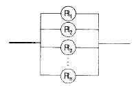
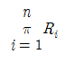
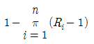
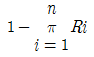
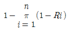
(정답률: 61%)
29. 연속제어 조종장치에서 정확도보다 속도가 중요하다면 조종반응(C/R)의 비율은 어떻게 하여야 하는가?
- C/R, 비율을 1 로 조절하여야 한다.
- C/R, 비율을 1 보다 낮게 조절하여야 한다.
- C/R, 비율을 1 보다 높게 조절하여야 한다.
- C/R, 비율을 조절할 필요가 없다.
(정답률: 63%)
30. 다음 FT도에서 정상사상의 발생확률은 얼마인가? (단 X1은 0.1, X2는 0.2, X3은 0.1,X4는 0.2이다.)
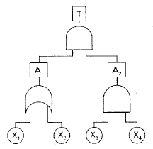
- 0.0004
- 0.0026
- 0.0⑤6
- 0.0784
(정답률: 57%)
31. 다음 중 소음의 영향에 대한 일반적인 설명과 가장 거리가 먼 것은?
- 간단하고 정규적인 과업의 퍼포먼스는 소음의 영향이 없으며 오히려 개선되는 경우도 있다.
- 시력, 대비판별, 암시, 순응, 눈동작 속도 등 감각 능은 모두 소음의 영향이 적다.
- 운동 퍼포먼스는 균형과 관계되지 않는 한 소음에 의해 나빠지지 않는다.
- 쉬지 않고 계속 실행하는 과업에 있어 소음은 긍정적인 영향을 미친다.
(정답률: 79%)
32. 다음 중 신뢰성과 보전성 개선을 목적으로 한 일반적이고 효과적인 보전기록 자료에 해당하지 않는 것은?
- 설비이력카드
- 일정계획표
- MTBF분석표
- 고장원인대책표
(정답률: 67%)
33. 다음 중 높은 고장 등급을 갖고 고장모드가 기기 전체의 고장에 어느 정도 영향을 주는가를 정성적으로 평가하는 해석 방법은?
- FTA
- FMEA
- HAZOP
- FHA
(정답률: 58%)
34. 휘도(luminance)가 10cd/m2 이고 조도 (illuminance)가 100lux일 때 반사율(reflectance)은 몇 % 인가?
- 0.1л
- 10л
- 100л
- 1000л
(정답률: 50%)
35. 다음 중 자동차 가속 페달과 브레이크 페달 간의 간격 브레이크 폭 등을 결정하는데 사용할 수 있는 가장 적합한 인간 공학 이론은?
- Miller의 법칙
- Fitts의 법칙
- Weber의 법칙
- Wickens의 모델
(정답률: 52%)
36. 다음 중 인체 측정자료의 응용원칙에서 자동차의 좌석이나 사무실 의자 등의 설계에 가장 적합한 원칙은?
- 조절식 설계원칙
- 평균값을 이용한 설계원칙
- 최소 집단치를 이용한 설계원칙
- 최대 집단치를 이용한 설계원칙
(정답률: 69%)
37. [그림]의 FT도에서 Fussell의 알고리즘에 의해 구한 컷셋으로 옳은 것은?
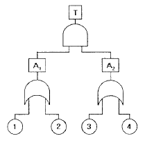
- (1,2),(1,3),(2,3),(2,4)
- (1,3),(1,4),(2,3),(2,4)
- (1,2),(1,3),(1,4),(2,4)
- (1,3),(1,4),(2,3),(3,4)
(정답률: 67%)
38. 다음 중 인간-기계 시스템에서의 기본적인 기능으로 볼 수 없는 것은?
- 정보의 수용
- 정보의 저장
- 행동 기능
- 정보의 설계
(정답률: 63%)
39. FTA(Fault Tree Analysis)에 사용되는 논리 중에서 입력사상 중 어느 하나만이라도 발생하게 되면 출력사상이 발생하는 것은?
- AND GATE
- OR GATE
- 기본사상
- 통상사상
(정답률: 74%)
40. 위험관리와 안전관리와의 경계 구분에 있어 다음 중 안전관리의 영역과 가장 거리가 먼 것은?
- 재해의방지
- 안전공학적 연구
- 안전과 건강관리
- 손해에 대한 자금융통
(정답률: 86%)
3과목: 기계위험방지기술
41. 크레인에 설치하는 방호장치의 종류가 아닌 것은?
- 과부하방지장치
- 권과방지장치
- 브레이크해지장치
- 비상정지장치
(정답률: 69%)
42. 극한강도가 100MPa이고, 최대설계응력 10MPa 이면 안전율은?
- 1
- 5
- 10
- 100
(정답률: 79%)
43. 500rpm으로 회전하는 연삭기의 숫돌 지름이 200mm 일 때, 원수 속도는 약 몇 m/min인가?
- 31400
- 3140
- 314
- 3.14
(정답률: 74%)
44. 용접 팁의 청소는 무엇으로 해야 좋은가?
- 전선케이블
- 줄이나 팁크리너
- 동성이나 철선
- 동선이나 놋쇠선
(정답률: 82%)
45. 작업장 내 운반을 주목적으로 하는 구내운반차가 준수해야 할 사항으로 맞지 않는 것은?
- 주행을 제동하고 정지상태를 유지하기 위하여 유효한 제동장치를 갖출 것
- 경음기를 갖출 것
- 핸들의 중심에서 차체 바깥 측까지 거리가 65센티미터 이내일 것
- 운전자석이 차실내에 있을 때 좌우 한 개씩 방향지시기를 갖출 것
(정답률: 79%)
46. 수공구 작업시 재해방지를 위한 일반적인 유의사항이 아닌 것은?
- 사용 전 이상 유무를 점검한다.
- 작업자에게 필요한 보호구를 착용시킨다.
- 적합한 수공구가 없을 경우 유사한 것을 선택하여 사용한다,
- 사용 전 충분한 사용법을 숙지하고 익힌다.
(정답률: 87%)
47. 프레스기에 사용하는 양수조작식 방호장치의 일반적인 구조에 관한 설명으로 틀린 것은?
- 1행정 1정지 기구에 사용할 수 있어야 한다.
- 누름버튼을 양 손으로 동시에 조작하지 않으면 작동시킬 수 없는 구조이어야 한다.
- 누름버튼을 상호간 내측거리는 300㎜ 이상이어야 한다.
- 사용전원전압의 ±30% 변동 범위에서도 정상적으로 작동되어야 한다.
(정답률: 75%)
48. 기계설비기구의 위험점에서 고정부분과 회전부분이 만드는 위험점이 아니고 말링커터, 둥근 톱날 등과 같이 회전하는 운동부 자체의 위험이나 운동하는 기계부분 자체의 위험에서 초래되는 위험점은?
- 물림점(Nip-point)
- 절단점(Cutting-point)
- 끼임점(Shear-point)
- 협착점(Squeeze-point)
(정답률: 59%)
49. 기계의 왕복운동을 하는 동작 부분과 움직임이 없는 고정부분 사이에 형성되는 위험점으로 프레스 등에서 주로 나타나는 것은?
- 끼임점(Shear point)
- 물림점(Nip point)
- 절단점(Cutting point)
- 협착점(Squeeze point)
(정답률: 70%)
50. 롤러의 맞물림점 전방 60mm의 거리에 가드를 설치하고자 할 때 가드 개구부의 간격은 얼마인가? (단, 위험점이 전동체가 아닌 경우임)
- 12mm
- 15mm
- 18mm
- 20mm
(정답률: 63%)
51. 산소-아세틸렌 가스용접장치에 사용되는 호스 색깔 중 [산소호스 : 아세틸렌 호스] 색이 바르게 짝지어진 것은?
- 적색 : 흑색
- 적색 : 녹색
- 흑색 : 적색
- 녹색 : 흑색
(정답률: 45%)
52. 프레스기에서 슬라이드 행정길이가 몇 mm 이상일 때 손쳐내기식 방호장치를 사용할 수 있는가?
- 10 mm
- 20 mm
- 40 mm
- 80 mm
(정답률: 59%)
53. 아세틸렌 용접장치에 대하여 그 취관마다 부착해야 하는 방호장치는?
- 덮개
- 시건장치
- 안전기
- 울
(정답률: 79%)
54. 25m/s 초과 120m/s 미만의 속도로 회전하는 고속회전체에 적합한 방호 설비는?
- 덮개
- 분할날
- 급정지장치
- 광전자식 방호장치
(정답률: 64%)
55. 원동형 연삭기의 방호장치를 그림과 같이 설치할 때 각도 a와 간격 b로 가장 옳은 것은?
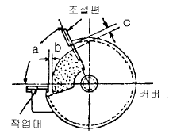
- a : 65˚ 이내, b : 3mm 이내
- a : 60˚ 이내, b : 3mm 이내
- a : 90˚ 이내, b : 5mm 이내
- a : 65˚ 이내, b : 5mm 이내
(정답률: 58%)
56. 산업용 로봇의 교시 등의 작업 수행시 불의의 작동 또는 잘못된 조작에 따른 위험을 방지하기 위한 조치사항으로 거리가 먼 것은?
- 작업 중 로봇의 작동 상채를 수시로 확인하기 위하여 주변에 방책 등을 설치해서는 안된다.
- 이상을 발견한 때의 조치에 대한 지침을 정하고, 그에 따라 작업을 하도록 한다.
- 작업 중에는 담당자 이외의 자가 로봇의 가동 스위치를 조작할 수 없도록 필요한 조치를 한다.
- 로봇의 조작 방법 및 순서에 관한 지침을 정하고, 그에 따라 작업을 하도록 한다.
(정답률: 79%)
57. 컨베이어의 안전장치가 아닌 것은?
- 이탈 및 역주행방지장치
- 비상정지장치
- 덮개 또는 울
- 비상난간
(정답률: 74%)
58. 선반 작업에 대한 안전수칙으로 틀린 것은?
- 척 핸들은 항상 척에 끼워 둔다.
- 베드 위에 공구를 올려놓지 않아야 한다.
- 바이트를 교환할 때는 기계를 정지시키고 한다.
- 열감의 길이가 외경과 비교하여 매우 길 때에는 방진구를 사용한다.
(정답률: 83%)
59. 목재 가구용 둥근톱의 목재반발 예방장치가 아닌 것은?
- 반발방지 발톱(finger)
- 분할날(spreader)
- 덮개(cover)
- 반발방지 롤(roll)
(정답률: 56%)
60. 롤러기의 급정지장치 설치 방법 중 잘못된 것은?
- 손 조작식은 바닥면에서 2m 이내일 것
- 복부 조작식은 바닥면에서 0.8m 이상 1.1m 이내일 것
- 무릎 조작식은 바닥면에서 0.4m 이상 0.6m 이내일 것
- 급정지장치가 동작한 경우 롤러기의 기동장치를 재조작 하지 않으면 가동되지 않는 구조일 것
(정답률: 78%)
4과목: 전기 및 화학설비위험방지기술
61. 방전에너지가 크지 않은 코로나 방전이 발생할 경우 공기중에 발생할 수 있는 것은?
- O2
- O3
- N2
- N3
(정답률: 71%)
62. 다음 중 가스누설검지기에 관한 설명으로 틀린 것은?
- 검지원리는 반도체식, 접촉연소식 등이 있다.
- 경보방식에서 가스농도가 경보설정치에 달했을 직후에 경보를 발하는 방식을 반한시경보험이라 한다.
- 경보방식에서 가스농도가 경보설정치에 달한 후 일정시간 그 농도 이상의 상태를 지속했을 때에 경보를 발하는 방식을 경보지연형이라 한다,
- 가스경보기는 방폭성과 견고성이 요구된다.
(정답률: 49%)
63. 다음 중 산업안전보건법에 따라 누전에 의한 감전의 위험을 방지하기 위하여 확실한 접지를 하여야 하는 부분에 해당하지 않는 것은?
- 전기기계∙ 기구의 금속제 외피 및 철대
- 전기를 사용하지 아니하는 설비 중 전동식 양중기의 프레임에 해당하는 금속체
- 사용전압이 대지전압 150V를 넘는 코드 및 플러그를 접속하여 사용하는 전기기계∙기구의 노출된 비충전 금속체
- 전기용품안전 관리법에 의한 이중절연구조 또는 이와 동등 이상으로 보호되는 전기가계∙기구
(정답률: 64%)
64. 산업안전보건법상 대지전압이 150V를 초과하는 이동형의 전기기계∙기구로 정격전부하전류가 25A 인 것에 접속 하여야 하는 누전차단기의 작동시간으로 옳은 것은?
- 0.01초 이내
- 0.03초 이내
- 0.⑤초 이내
- 0.1초 이내
(정답률: 71%)
65. 다음 중 가장 짧은 기간에도 노출되어서 안되는 노출 기준은?
- TLV-S
- TLV-C
- TLV-TWA
- TLV-STEL
(정답률: 55%)
66. 낮은 압력에서 물질의 끓는점이 내려가는 현상을 이용하여 시행하는 분리법으로 온도를 높여서 가열할 경우 원료가 분해될 우려가 있는 물질을 증류할 때 사용하는 방법을 무엇이라 하는가?
- 진공증류
- 추출증류
- 공비증류
- 수증기증류
(정답률: 55%)
67. 변전소 등에 고장전류가 유입되었을 때 두 다리가 대지에 접촉하고 있다. 한 손을 도전성 구조물에 접촉했을 때, 심실세동전류를 Ik인체저항을 Rb,지표상 저항률(고유 저항)을 Ps라 하면 허용접촉접압(E)을 구하는 식으로 옳은 것은?
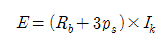
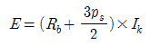
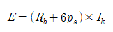
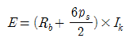
(정답률: 59%)
68. 다음 중 분해폭발을 일으키기 가장 어려운 물질은?
- 아세틸렌
- 에틸렌
- 이산화질소
- 암모니아
(정답률: 48%)
69. 사용전압이 저압인 전로에서 정전이 어려운 경우 등 절연저항 측정이 곤란한 경우에 누설전류는 몇 mA이하로 유지하여야 하는가?
- 0.1
- 1
- 10
- 50
(정답률: 50%)
70. 잘 절연된 컨베이어 벨트 시스템에서 발생하는 정전기의 전압이 10kV이고, 이 때 전정용량이 5pF일 때 이 시스템에서 1회의 정전기 방전으로 생성될 수 있는 에너지는 얼마인가?
- 0.2mJ
- 0.25mJ
- 0.5mJ
- 0.25J
(정답률: 63%)
71. 다음 중 산업안전보건법에 따른 관리대상 유해물질의 운반 및 저장 방법으로 적절하지 않은 것은?
- 물질이 새거나 발산될 우려가 없는 뚜껑 또는 마개가 있는 튼튼한 용기를 사용한다.
- 저장장소에는 관계 근로자가 아닌 사람의 출입을 금지 하는 표시를 한다.
- 관리대상 유해물질의 증기는 실외로 배출되지 않도록 적절한 조치를 한다.
- 관리대상 유해물질을 저장할 때 일정한 장소를 지정하여 저장하여야 한다.
(정답률: 76%)
72. 다음 중 전폐형 구조의 방폭구조가 아닌 것은?
- 내압 방폭구조
- 유입 방폭구조
- 압력 방폭구조
- 안전증 방폭구조
(정답률: 66%)
73. 다음 중 공정안전보고서에 관한 설명으로 틀린 것은?
- 사업주가 공정안전보고서를 작성한 후에는 별도의 심의 과정이 없다.
- 공정안전보고서를 제출한 사업주는 정하는 바에 따라 고용노동부장관의 확인을 받아야 한다,
- 고용노동부장관은 공정안전보고서의 이행 상태를 평가하고 그 결과에 따라 공정안전보고서를 다시 제출하도록 명할 수있다.
- 고용노동부장관은 공정안전보고서를 심사한 후 필요하다고 인정하는 경유에는 그 고정안전보고서의 변경을 명할 수 있다.
(정답률: 83%)
74. 60Hz 정현파 교류에 의해 인체가 감전되었을 때 다른 손의 도움 없이 자력으로 감전에서 벗어날 수 있는 최대전류(가수전류 또는 마비한계전류)의 크기로 가장 적절한 것은?
- 10 ~ 15mA
- 20 ~ 35mA
- 30 ~ 35mA
- 40 ~ 45mA
(정답률: 49%)
75. 다음 중 분진폭발에 대한 안전대책으로 가장 적절하지 않은 것은?
- 분진의 퇴적을 방지한다.
- 수분의 함량을 증가시킨다.
- 입자의 크기를 최소화한다,
- 불활성 분위기를 조성한다.
(정답률: 68%)
76. 정전기 제거를 위한 제전기의 종류 중 이온생성방식에 따른 분류로 볼 수 없는 것은?
- 자기방전식 제전기
- 방사선식 제전기
- 고주파식 제전식
- 전압인가 제전식
(정답률: 45%)
77. 다음 중 피부에 닿았을 때 탈지현상을 일으키는 물질은?
- 등유
- 아세톤
- 글리세린
- 니트로톨루엔
(정답률: 64%)
78. 다음 중 프로판(C3H8)의 완전연소 조성 농도는 약 몇 vol%인가? (단, 공기의 몰수는 4.733 이다.)
- 4.⑤
- 4.19
- 5.⑤
- 5.19
(정답률: 37%)
79. 다음 중 소화에 관한 설명으로 옳은 것은?
- 물을 가장 일반적인 소화제로서 모든 형태의 불을 소화하기에 가장 좋은 소화제이다.
- 탄화수소가스 혹은 유류 화재 등 B급 화재는 물에 의한 진화가 용이하다.
- B급 화재의 소화에 있어 첫 단계는 가능하다면 불을 일으키는 연료의 공급을 차단하는 것이다.
- 소화제로서의 물은 제5류 위험물에 대한 소화 적응성이 떨어지므로 사용할 수 없다.
(정답률: 64%)
80. 가연성가스를 사용하는 시설의 경우 방폭구조의 전기 기기를 사용하여야 하는데 다음 중 방폭구조의 전기 기기 선정 시 고려사항과 가장 거리가 먼 것은?
- 발화도
- 위험장소의 종류
- 폭발성 가스의 폭발 등급
- 부하용량
(정답률: 56%)
5과목: 건설안전기술
81. 말비계를 조립하여 사용할 때의 준수사항으로 옳지 않은 것은?
- 지주부재의 하단에는 미끄럼 방지장치를 한다.
- 양측 끝부분에 올라서서 작업하여야 한다.
- 지주부재와 수평면과의 기울기를 75˚ 이하로 한다.
- 말비계의 높이가 2m를 초과할 경우에는 작업발판의 폭을 40cm이상으로 한다.
(정답률: 71%)
82. 근로자의 추락 등에 의한 위험을 방지하기 위하여 안전난간을 설치할 때 준수하여야 할 기준으로 옳지 않은 것은?
- 안전난간은 임의의 점에서 임의의 방향으로 움직이는 100kg 이상의 하중에 견딜 수 있는 튼튼한 구조일 것
- 난간대는 지름 1.5cm 이상의 금속제 파이프나 그 이상의 강도를 가진 재료일 것
- 난간기둥은 상부난간대 와 중간난간대를 견고하게 떠받칠 수 있도록 작장간격을 유지할 것
- 상부난간대는 경사로의 표면으로부터 90cm 이상 120cm 이하에 설치할 것
(정답률: 66%)
83. 다음 중 콘크리트측압에 영향을 미치는 인자로 가장 거리가 먼 것은?
- 슬럼프
- 타설속도
- 대기의 온도 및 습도
- 거푸집의 종류
(정답률: 61%)
84. 달대비계는 주로 어느 곳에 설치하는가?
- 콘크리트 기초
- 철골기중 및 보
- 조적벽면
- 굴착사면
(정답률: 62%)
85. 안전장갑을 사용해야 할 작업이 아닌 것은?
- 전기 용접을 하는 작업
- 드릴을 사용하는 작업
- 굳지 않은 콘크리트에 접촉하는 작업
- 감전 위험이 있는 작업
(정답률: 80%)
86. 굴착작업 시 굴착시기와 작업장소를 정할 때 사전조사 사항이 아닌 것은?
- 지반의 지하수위 상태
- 지질 및 지층의 상태
- 굴착기의 이상유무
- 매설물 등의 유무 또는 상태
(정답률: 69%)
87. 지반조사 방법 중 충격날(bit)을 회전시켜 천공하므로 토층이 흐트러질 우려가 적어 불교란시료, 암석채취 등에 많이 사용되는 것은?
- 워시보링
- 로터리보링
- 퍼쿠션보링
- 탄성파탐사
(정답률: 58%)
88. 가설통로 설치 시 경사가 몇 도를 초과하면 미끄러지지 않고 구조로 설치하여야 하는가?
- 15˚
- 20˚
- 25˚
- 30˚
(정답률: 68%)
89. 굴착면의 기울기 기준으로 옳지 않은 것은?(2021년 11월 19일부터 개정된 규정 적용됨)
- 습지 - 1:1 ~ 1:1.5
- 건지 - 1:0.5 ~ 1:1
- 풍화암 - 1:1.0
- 연암 - 1:0.5
(정답률: 62%)
90. 추락방지용 10cm 그물코 매듭 없는 방망사 신품의 인장강도 기준은 얼마 이상인가?
- 120kg
- 135kg
- 200kg
- 240kg
(정답률: 55%)
91. 옹벽의 안정조건에서 활동에 대한 저항력 옹벽에 작용하는 수평력보다 최소 몇 배 이상 되어야 하는가?
- 1.0배
- 1.5배
- 2.0배
- 3.0배
(정답률: 70%)
92. 기초의 안전상 부동침하를 방지하는 대책으로 옳지 않은 것은?
- 구조물의 전체 하중이 기초에 균등하게 분포되도록 한다.
- 기초 상호간을 지중보로 연결한다.
- 한 구조물의 기초는 2종류 이상의 복합적인 기초형식 으로 한다.
- 기초 지반 아래의 토질이 연약할 경우는 연약지반 처리 공법으로 보강한다.
(정답률: 71%)
93. 아스팔트 포장도로 노반의 파쇄 또는 토사 중에 있는 암석제거에 가장 적당한 장비는?
- 스크레이퍼(Scraper)
- 롤러(Roller)
- 리퍼(Ripper)
- 드래그라인(Draline)
(정답률: 72%)
94. 항타기 및 항발기에서 사용하는 권상용 와이어로프의 안전계수는 최소 얼마 이상이어야 하는가?
- 2
- 5
- 8
- 10
(정답률: 71%)
95. 흙의 동상을 방지하기 위한 대책으로 옳지 않은 것은?
- 물의 유통을 원활하게 하여 지하수위를 상승시킨다.
- 모관수의 상승을 차단하기 위하여 지하수위 상승에 조립토층을 설치한다,
- 지표의 흙을 화학약품으로 처리한다.
- 흙속에 단열재료를 매입한다,
(정답률: 70%)
96. 대형 브레이커에 대한 설명 중 옳지 않은 것은?
- 수직 및 수평의 테두리 끊기 작업에도 시용할 수 있다.
- 공기식보다 유압식이 많아 사용된다.
- 셔블(shovel)에 부착하여 사용하며 일반적으로 상향 작업에 적합하다.
- 고층건물에서는 건물 위에 기계를 놓아서 작업할 수 있다.
(정답률: 44%)
97. 차량계 건설기계의 운전자가 운전위치를 이탈할 때 행하여야 할 조치사항으로 옳지 않은 것은?
- 브레이크를 걸어둔다.
- 버킷은 지상에서 1m 정도의 위치에 둔다.
- 디퍼는 지면에 내려둔다.
- 원동를 정지시킨다,
(정답률: 79%)
98. 강재거푸집과 비교한 합판 거푸집의 특성이 아닌 것은?
- 외기 온도의 영향이 적다.
- 녹이 슬지 않음으로 보관하기가 쉽다.
- 중량이 무겁다.
- 보수가 간단하다.
(정답률: 71%)
99. 추락의 정의로 옳은 것은?
- 고소에 위치한 자재, 도구, 등이 하부로 떨어지는 것
- 계단 경사로 등에서 굴러 떨어지는 것
- 고소 근로자가 위치에너지의 상실로 인해 하부로 떨어지는 것
- 고소에 위치한 가설물의 일부가 붕괴 하는 것
(정답률: 78%)
100. 안전관리비의 사용 항목에 해당되지 않는 것은?
- 안전시설비
- 개인보호구 구입비
- 접대비
- 사업장의 안전진단비
(정답률: 82%)